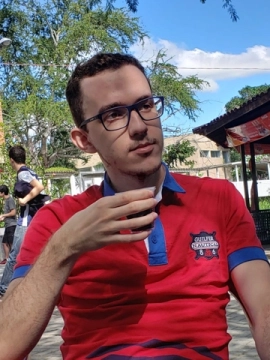
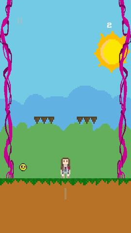
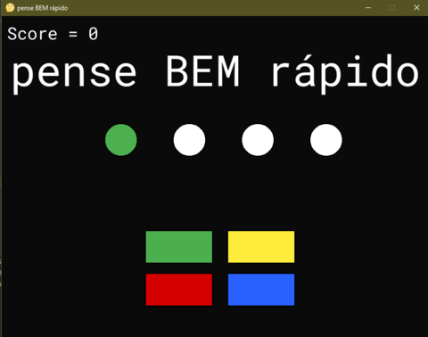

Meu nome é Breno Alencar Vieira. Atualmente, sou graduando de Engenharia Elétrica pela Universidade Federal de Campina Grande (UFCG).
Email: brenoalencarvieira07@gmail.com

Anne’s Challenge é um jogo desenvolvido na Game Engine Unity que é utilizada por várias empresas do mundo para criação de jogos, segue aqui uma lista de alguns jogos de renomes que foram criados usando a Unity. Para a criação da mecânica única do game foi usado o C#. O jogo foi hospedado na Play Games e pode ser baixado clicando aqui.

Game criado a partir do módulo pygame em Python. O código fonte está disponibilizado aqui junto com as instruções do game.
